Мои игры и приложения
Всё играется прямо в браузере — на компьютере и на телефоне, без установки. Прогресс сохраняется на устройстве.
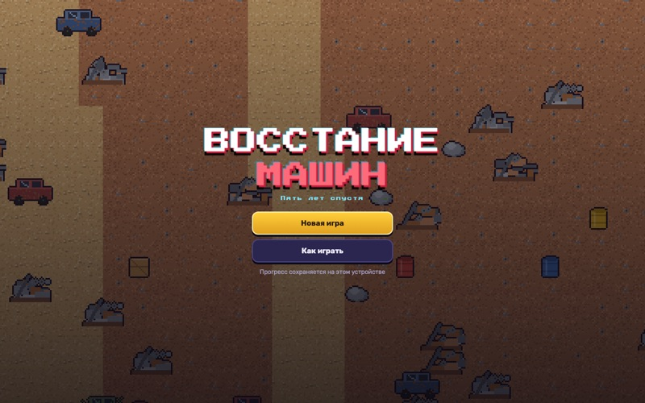
Восстание машин
Пять лет после восстания машин. Победи Хроноса — программу, захватившую город. 25 локаций, 24 босса, три концовки.
Играть →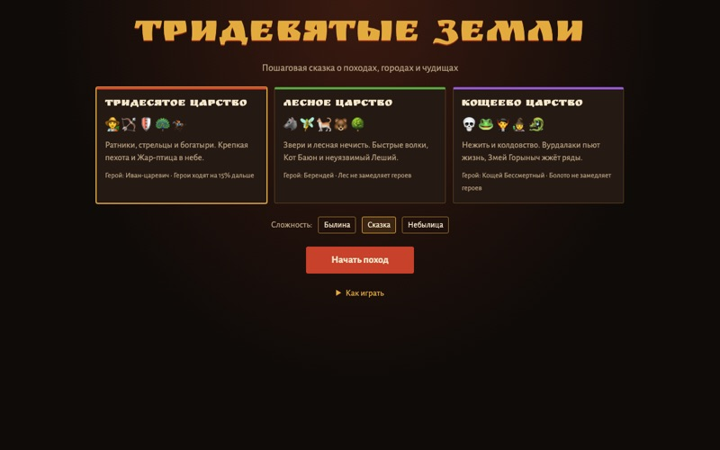
Тридевятые земли
Стратегия в духе Heroes по русским сказкам: три царства, герои, замки и походы по карте.
Играть →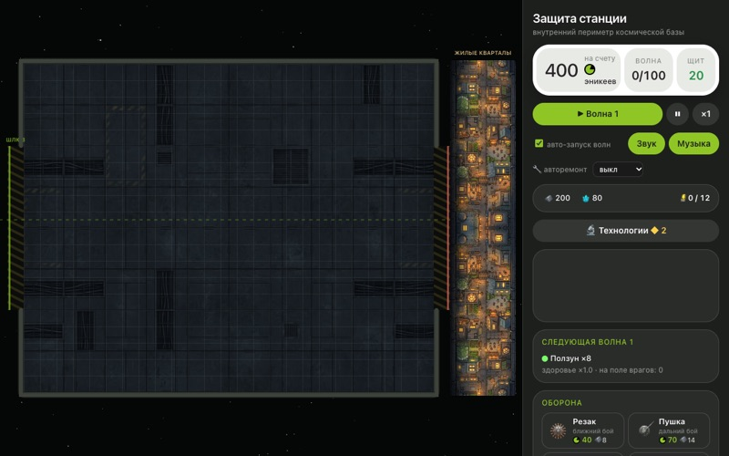
Станция «Рубеж»
Чужие прорвались на космическую базу. Строй лабиринт из башен, развивай жилой квартал и продержись 100 волн.
Играть →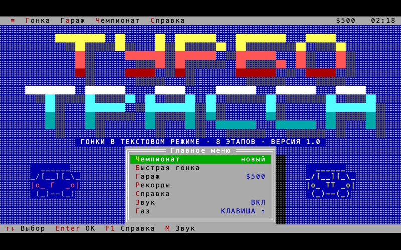
Турбо-Трасса
Автогонки в текстовом режиме в стиле DOS: чемпионат из 8 этапов, быстрая гонка, гараж и рекорды.
Играть →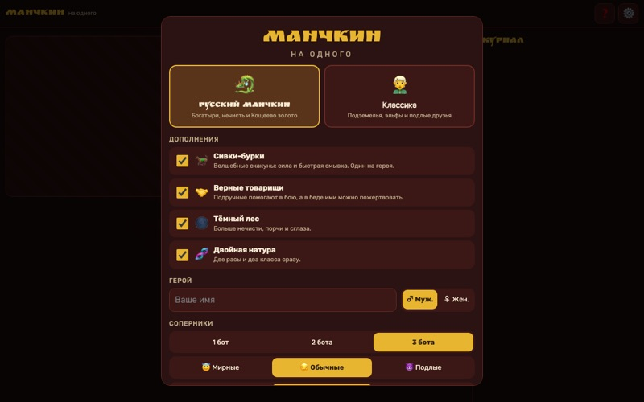
Манчкин на одного
Манчкин против ботов: Классика и Русский манчкин с дополнениями.
Играть →
Путь Героя
Пиксельная RPG: бои, мини-игры и три пути — Надежды, Ненависти и Власти. Твой выбор решает концовку.
Играть →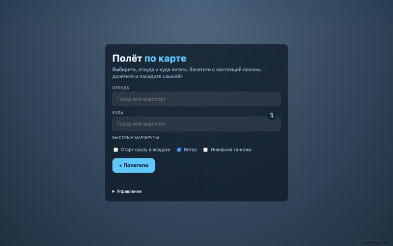
Полёт по карте
Выбери, откуда и куда лететь: взлёт с настоящей полосы, полёт над картой OpenStreetMap и посадка.
Играть →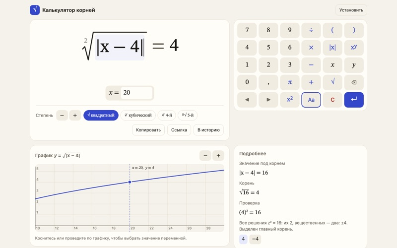
Калькулятор корней
Квадратные, кубические и любые корни из числа или выражения вроде |x − 4|: точный вид, комплексные корни, график. Ставится на телефон.
Открыть →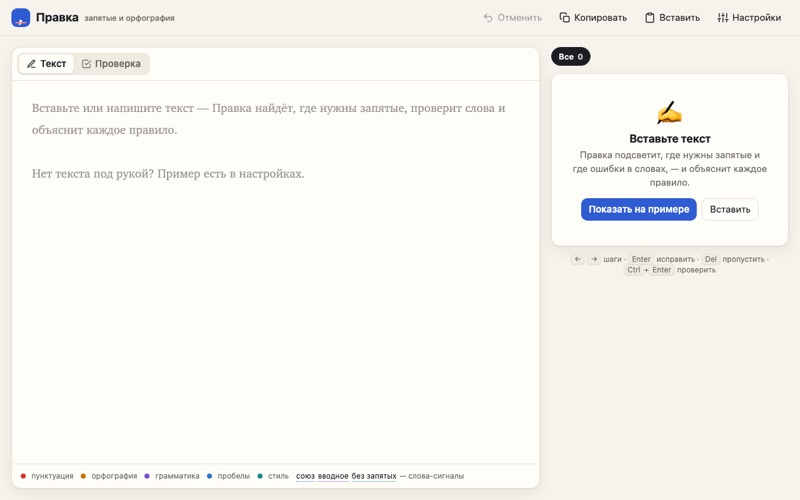
Правка
Проверка запятых и орфографии русского текста: подсвечивает ошибки и объясняет каждое правило. Ставится на телефон.
Открыть →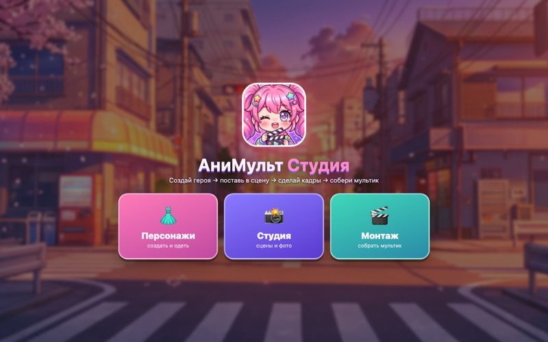
АниМульт Студия
Конструктор аниме-мультиков: создай и одень героя, поставь в сцену, собери кадры, добавь звук и сохрани видео.
Открыть →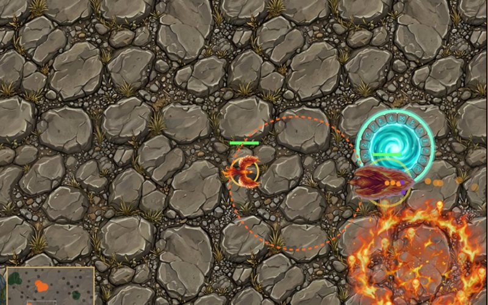
Сшибка
Фэнтези-стратегия на двоих: доска 8×8, а захват клетки — бой на огромной арене с разделённым экраном, болотами, лавой и порталами.
Играть →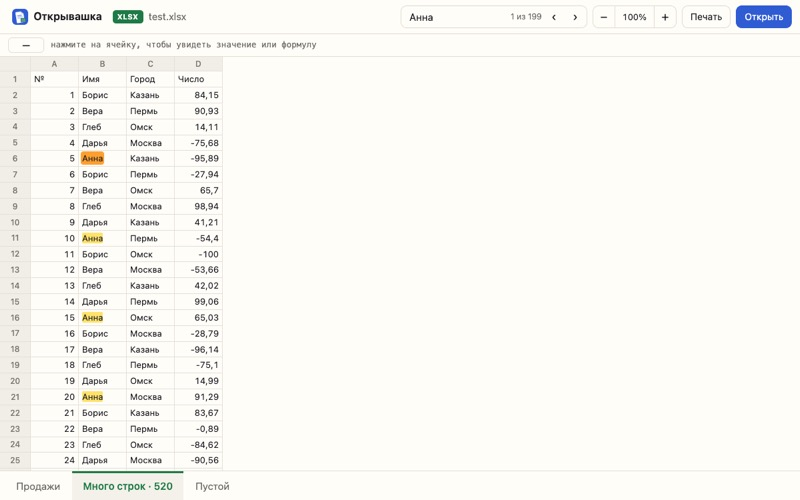
Открывашка
Просмотр Word и Excel в браузере: .docx, .doc, .xlsx, .xls, .ods, .csv. Файл никуда не загружается, работает без сети.
Открыть →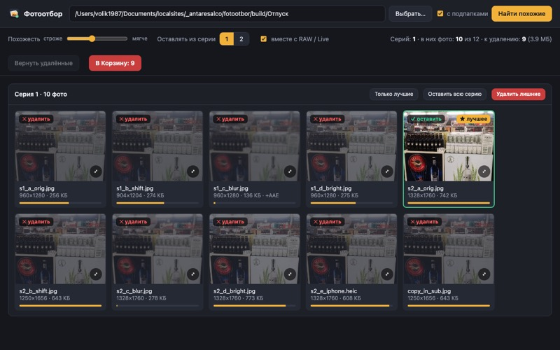
Фотоотбор
Находит в папке серии похожих фото, отмечает лучший кадр по резкости и отправляет остальные в Корзину. HEIC, RAW, Live Photo.
Скачать →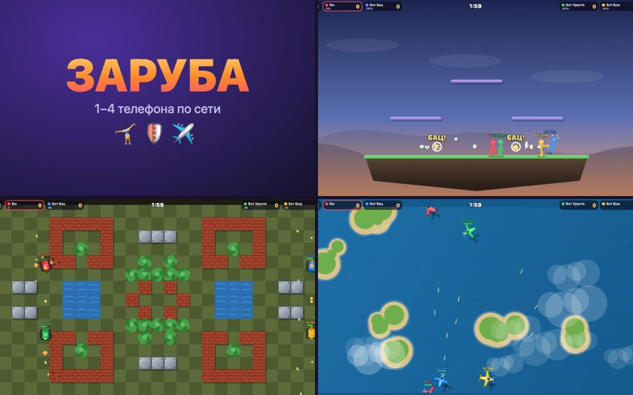
Заруба
Сетевые мини-игры для компании: каждый на своём телефоне, вход по коду или QR. Стикмены-драчуны, танчики с рикошетами и самолётики с ракетами.
Играть →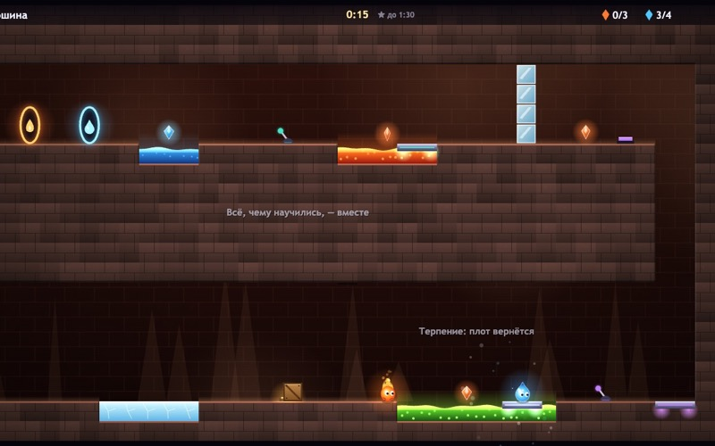
Тандем
Уголёк ходит по лаве, Капля плавает и замораживает воду — пройти 8 уровней с кнопками, лифтами и плотами можно только вместе. Каждый на своём телефоне или вдвоём на одном.
Играть →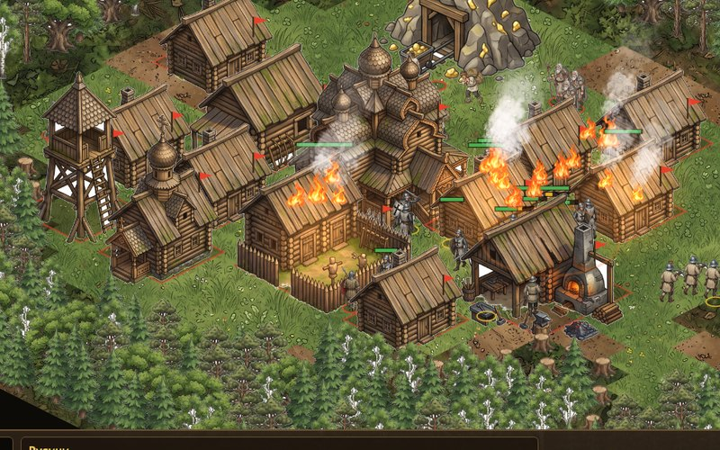
Сеча: Три знамени
Русичи, монголы и тевтонцы строят деревни, рубят лес и жгут друг друга: деревянные постройки горят, огонь перекидывается на соседей и лес. Отшельники продают заклинания, в центре карты спит дракон. Для компьютера, против ИИ или с друзьями.
Играть →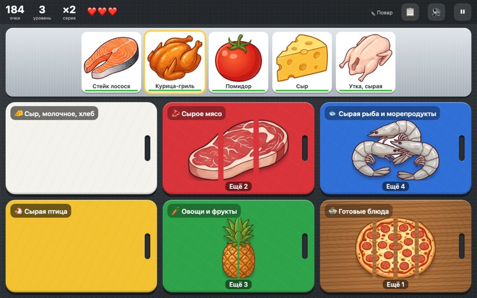
Шесть досок
Как на настоящей кухне: кладите продукты на доску нужного цвета и режьте взмахом пальца. Сырое мясо — на красную, рыбу — на синюю, птицу — на жёлтую, а курицу-гриль — на деревянную.
Играть →